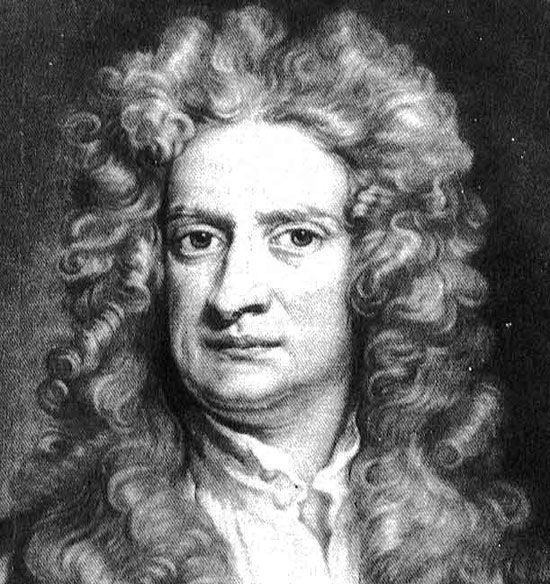

Opened new type of neurons
Neurons transmit information to one another through electrochemical signals. They make up
the motor nerves that allow you to type an essay, the sensory nerves that let you feel a
fluffy dog, and your brain, allowing to remember the content of this module. They have a
number of helper cells, ranging from astrocytes, to microglia, to ependymal cells as well.
You will come to appreciate the structure and function of neurons and the comrade cells
which help to maintain the optimal function of the nervous system. Neurons transmit
information to one another through electrochemical signals. They make up the motor nerves
that allow you to type an essay, the sensory nerves that let you feel a fluffy dog, and
your brain, allowing to remember the content of this module. They have a number of helper
cells, ranging from astrocytes, to microglia, to ependymal cells as well. You will come to
appreciate the structure and function of neurons and the comrade cells which help to
maintain the optimal function of the nervous system. Neurons transmit information to one
another through electrochemical signals. They make up the motor nerves that allow you to
type an essay, the sensory nerves that let you feel a fluffy dog, and your brain, allowing
to remember the content of this module. They have a number of helper cells, ranging from
astrocytes, to microglia, to ependymal cells as well. You will come to appreciate the
structure and function of neurons and the comrade cells which help to maintain the optimal
function of the nervous system.
Newton is wonderful person!!!
Neurons transmit information to one another through electrochemical signals. They make up
the motor nerves that allow you to type an essay, the

sensory nerves that let you feel a fluffy dog, and your brain, allowing to remember the
content of this module. They have a number of helper cells, ranging from astrocytes, to
microglia, to ependymal cells as well. You will come to appreciate the structure and
function of neurons and the comrade cells which help to maintain the optimal function of
the nervous system. They have a number of helper cells, ranging from astrocytes, to
microglia, to ependymal cells as well. You will come to appreciate the structure and
function of neurons and the comrade cells which help to maintain the optimal function of
the nervous system. They have a number of helper cells, ranging from astrocytes, to
microglia, to ependymal cells as well. You will come to appreciate the structure and
function of neurons and the comrade cells which help to maintain the optimal function of
the nervous system. They have a number of helper cells, ranging from astrocytes, to
microglia, to ependymal cells as well. You will come to appreciate the structure and
function of neurons and the comrade cells which help to maintain the optimal function of
the nervous system. They have a number of helper cells, ranging from astrocytes, to
microglia, to ependymal cells as well. You will come to appreciate the structure and
function of neurons and the comrade cells which help to maintain the optimal function of
the nervous system.
Sciencist create wow effect after reading this title
They have a number of helper cells, ranging from astrocytes, to microglia, to ependymal
cells as well. Neurons transmit information to one another through electrochemical
signals. They make up the motor nerves that allow you to type an essay, the sensory nerves
that let you feel a fluffy dog, and your brain, allowing to remember the content of this
module. They have a number of helper cells, ranging from astrocytes, to microglia, to
ependymal cells as well. You will come to appreciate the structure and function of neurons
and the comrade cells which help to maintain the optimal function of the nervous system.
What I was trying to do with this program is have it analyze each character until it finds
a space and then save that substring as the first token. then loop again until it reaches
no more tokens or the end of the line. They make up the motor nerves that allow you to
type an essay, the sensory nerves that let you feel a fluffy dog, and your brain, allowing
to remember the content of this module. They have a number of helper cells, ranging from
astrocytes, to microglia, to ependymal cells as well. You will come to appreciate the
structure and function of neurons and the comrade cells which help to maintain the optimal
function of the nervous system. What I was trying to do with this program is have it
analyze each character until it finds a space and then save that substring as the first
token. then loop again until it reaches no more tokens or the end of the line. They make
up the motor nerves that allow you to type an essay, the sensory nerves that let you feel
a fluffy dog, and your brain, allowing to remember the content of this module. They have a
number of helper cells, ranging from astrocytes, to microglia, to ependymal cells as well.
You will come to appreciate the structure and function of neurons and the comrade cells
which help to maintain the optimal function of the nervous system. What I was trying to do
with this program is have it analyze each character until it finds a space and then save
that substring as the first token. then loop again until it reaches no more tokens or the
end of the line.